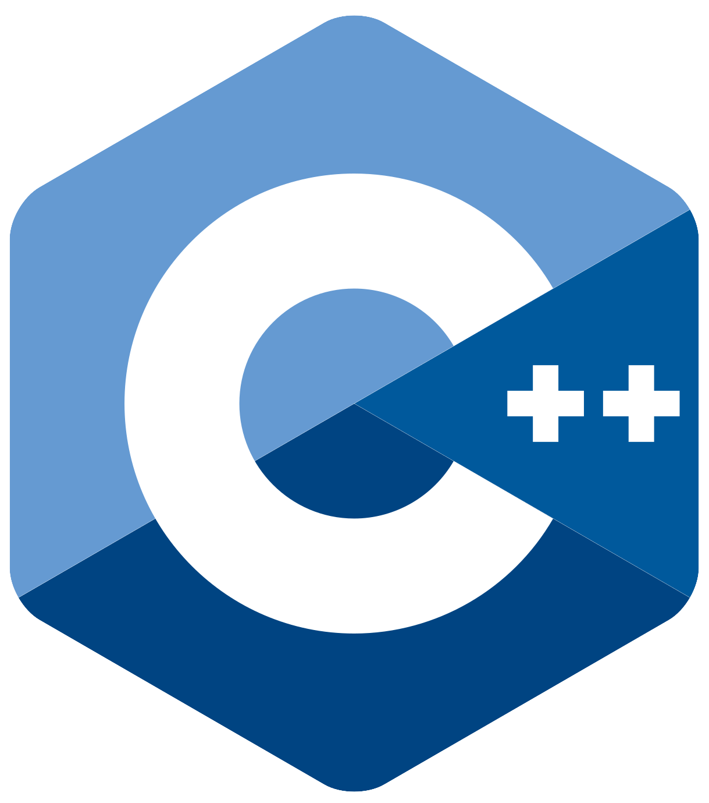
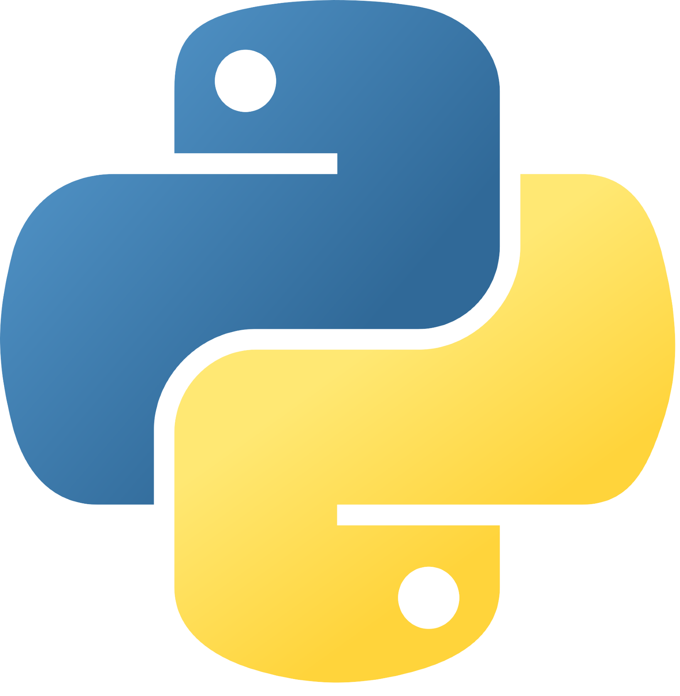
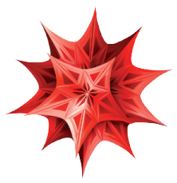

About me
Hi! My name is Pau, which means "peace" in Catalan. I grew up in Cardedeu, a small town in Catalonia, Spain. After completing the Spanish A-levels, I decided to study Theoretical Physics at the University of Manchester. My passion for the field grew, and my achievements allowed me to pursue a Ph.D at the University of Liverpool, working on one of the most exciting and unsolved mysteries in the Standard Model of Particle Physics: the muon g-2 anomaly.
Some of my achievements include getting the Tessella Prize for best use of software in my Master's thesis, completing the Spanish A-levels with Honours and getting a First Class in my degree. Outside of education and physics, I was part of the team that won the 2018 Catalan Debate League.
In my free time I enjoy dancing salsa, spending time with friends and family and reading. I am also a big fan of learning, and I develop toy projects when the time allows me to. If you are interested, you can check some of them in the Portfolio section, as well as some academic work. Hope you like it!
Skills
- 
- 
-

- 